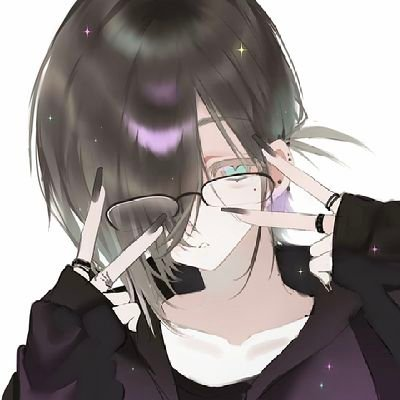
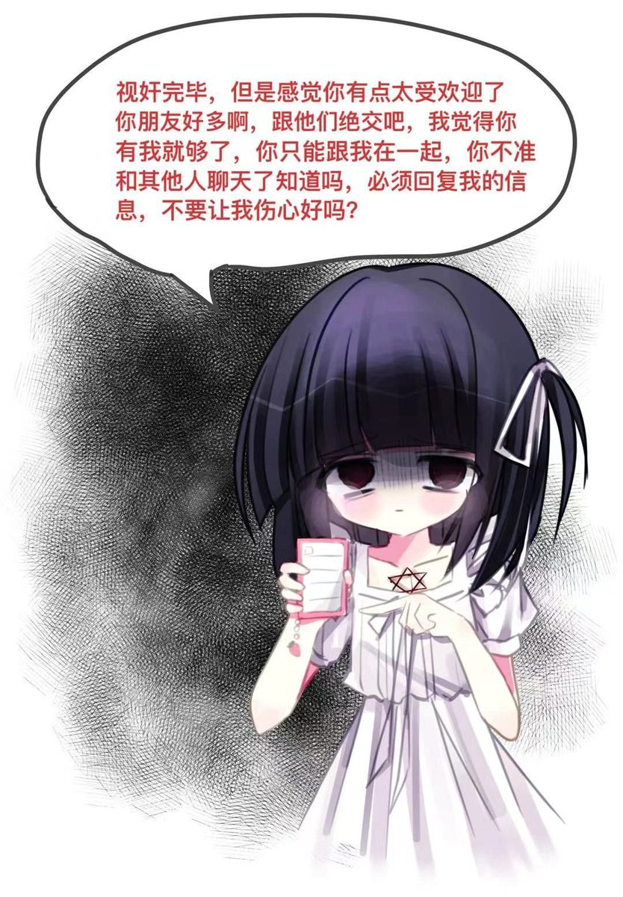

Accelerator🇦🇺
@HanQWQ457437
我真的不想吃藥💊了，我知道药可以给我带来稳定，但是，意识和情绪视野模糊和耳鸣头疼无时不在提示我是个病人，我的记忆大多数已经在忘记或是模糊后经过自身的保护而肆意捏造，我没有办法控制情绪，我没有办法发泄情绪，我不想吃鑰了，我想摆脱这种感觉，我想真实的活着，而非这样虚假的不受控制的活着。我讨厌我自己，我厌恶我自己，但是我不知道我又能做点什么，我一直特别想巳了算了，不论是身体的病痛还是精神的割裂，他们一直在折磨我，我真的不想吃鑰了，我只想当一下正常的人，健康的人，可以有自己的情绪。
